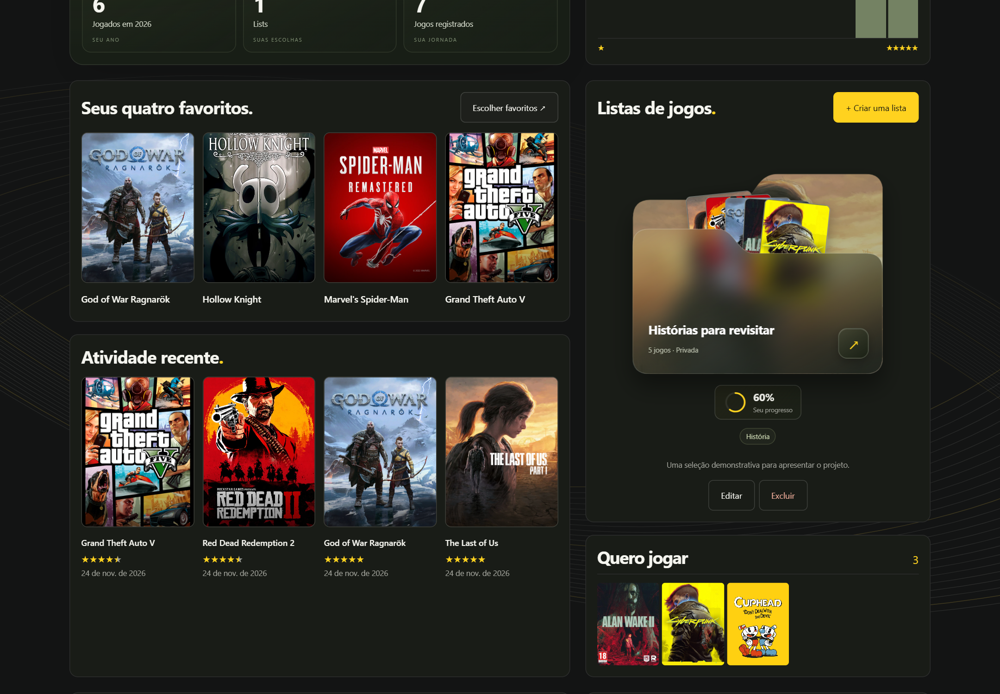

02 / DO SEU JEITO
Sua coleção tem
a sua cara.
Quatro favoritos, listas com ou sem ranking, banner de jogo e um histórico para acompanhar.
PERFIL / FAVORITOS E LISTAS

Top 4 favoritos Listas personalizadas
Tela do projeto com perfil e dados demonstrativos.